Source: DeltaV Scalable Process System — Hardware Installation and Reference Manual, D800001X312, April 2021 (Emerson). Appendix A, "Environmental Specifications," pp. 95–98; Appendix B, "Carrier Specifications," pp. 99–124.
This lesson covers two foundational reference topics every DeltaV installer must know: what environmental conditions each device can tolerate and the physical and electrical characteristics of every carrier type. These specifications determine where you can mount equipment, how much current a carrier can deliver, and how far a LocalBus cable can run.
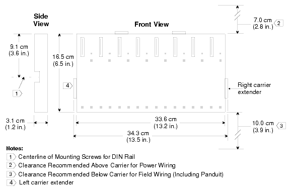
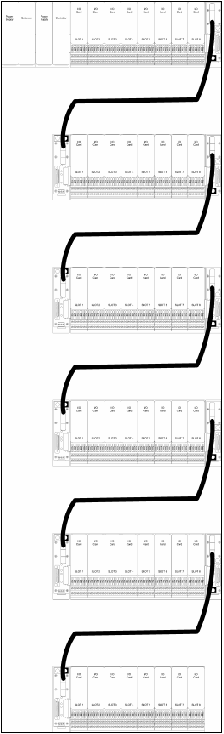
All DeltaV system products meet the appropriate Europitions fall within the rated ranges listed below.
The following table lists the operating temperature, storage temperature, and relative humidity limits for all major DeltaV system devices. These are the primary constraints for site selection.
| Device | Operating Temperature | Storage Temperature | Relative Humidity |
|---|---|---|---|
| Workstation | 10°C to 35°C (50°F to 95°F) Max 10°C (18°F) change per hour |
−20°C to 60°C (−4°F to 140°F) | 20% to 80%, non-condensing |
| 3Com 3C16700A 8-Port Hub | 0°C to 40°C (32°F to 104°F) | −30°C to 60°C (−22°F to 140°F) | 0% to 90%, non-condensing |
| Allied Telesyn Switches (AT-FS708, AT-FS709FC) |
0°C to 40°C (32°F to 104°F) | −25°C to 70°C (−13°F to 158°F) | 5% to 95%, non-condensing |
| Cisco Switches (2940, 2950, 2950C, 2960, 3550FX, 3750, 3750G) |
0°C to 45°C (32°F to 113°F) | −25°C to 70°C (−13°F to 158°F) | 10% to 85%, non-condensing |
| DeltaV MD20/MD30/FP20 Smart Switches (non-ES versions) |
0°C to 60°C (32°F to 140°F) | −40°C to 85°C (−40°F to 185°F) | 10% to 95%, non-condensing |
| DeltaV MD20/MD30/FP20 Smart Switches (ES versions, conformal coating) |
−40°C to 70°C (−40°F to 158°F) | −40°C to 85°C (−40°F to 185°F) | 10% to 95%, non-condensing |
| DeltaV RM100 Smart Switch | 0°C to 50°C (32°F to 122°F) | −20°C to 85°C (−4°F to 185°F) | 10% to 95%, non-condensing |
| DeltaV RM104 Smart Switch | 0°C to 50°C (32°F to 122°F) | −20°C to 85°C (−4°F to 185°F) | 10% to 95%, non-condensing |
| MD Plus Controllers | −40°C to 70°C (−40°F to 158°F) | −40°C to 85°C (−40°F to 185°F) | 5% to 95%, non-condensing |
| MX Controllers | −40°C to 60°C (−40°F to 140°F) | −40°C to 85°C (−40°F to 185°F) | 5% to 95%, non-condensing |
| Single/Four Port Fiber Switch, Remote Interface Unit | −40°C to 70°C (−40°F to 158°F) | −40°C to 85°C (−40°F to 185°F) | 5% to 95%, non-condensing |
| Pre-Series 2 Profibus, Pre-Series 2 DeviceNet | 0°C to 55°C (32°F to 131°F) | −40°C to 85°C (−40°F to 185°F) | 5% to 95%, non-condensing |
| Series 2 I/O (except As-Interface) |
−40°C to 70°C (−40°F to 158°F) | −40°C to 85°C (−40°F to 185°F) | 5% to 95%, non-condensing |
| Series 2 As-Interface | −25°C to 70°C (−13°F to 158°F) | −40°C to 85°C (−40°F to 185°F) | 5% to 95%, non-condensing |
| System Power Supplies | 0°C to 60°C (32°F to 140°F) | −40°C to 70°C (−40°F to 185°F) | 5% to 95%, non-condensing |
| System Power Supply (Dual DC/DC) | −40°C to 70°C (−40°F to 158°F) | −40°C to 70°C (−40°F to 185°F) | 5% to 95%, non-condensing |
| Legacy DIN Rail-Mounted Bulk Power Supply | −40°C to 70°C (−40°F to 158°F) | −40°C to 70°C (−40°F to 185°F) | 5% to 95%, non-condensing |
| Legacy Panel-Mounted Bulk Power Supply | 0°C to 60°C (32°F to 140°F) at 300 W and altitude < 914 m (3000 ft) |
−40°C to 85°C (−40°F to 185°F) | 5% to 95%, non-condensing |
| DeltaV Controller Firewall | 0°C to 55°C (32°F to 131°F) | −40°C to 80°C (−40°F to 176°F) | 10% to 95%, non-condensing |
| Fiber-Optic Media Converter | 0°C to 60°C (32°F to 140°F) | −40°C to 70°C (−40°F to 185°F) | 5% to 95% |
| Fieldbus H1 Carrier | −40°C to 70°C (−40°F to 158°F) | −40°C to 85°C (−40°F to 185°F) | 5% to 95%, non-condensing |
| Round Ribbon Cable | 0°C to 60°C (0°F to 140°F) | −20°C to 70°C (−4°F to 158°F) | 5% to 95%, non-condensing |
The following table summarizes vibration, shock, and airborne contaminant specifications for DeltaV devices.
| Device | Airborne Contaminants | Vibration | Shock |
|---|---|---|---|
| Workstation | Refer to manufacturer's specifications | ||
| 8-Port Hub, All Switches | Refer to manufacturer's specifications | ||
| Fieldbus H1 Carrier, System Power Supplies, Controllers, Single Port Fiber Switch, Remote Interface Unit, Pre-Series 2 I/O, Series 2 I/O | ISA-S71.04-1985 Class G3 |
1 mm peak-to-peak from 5 Hz to 16 Hz 0.5 g from 16 Hz to 150 Hz |
10 g half-sine wave for 11 ms |
| DeltaV Controller Firewall | Refer to manufacturer's specifications | ||
| Legacy Bulk Power Supplies | ISA-S71.04-1985 Class G2 |
MIL-STD-810D Method 514.3, Category 1, Procedure I |
MIL-STD-810D Method 516.3, Procedure III |
The DeltaV system supports multiple carrier types organized into three categories: Horizontal, VerticalPLUS, and Legacy Vertical. There are also Intrinsically Safe carriers for hazardous area applications. Carriers provide the physical mounting platform and electrical backplane for controllers, power supplies, and I/O cards.
| Carrier Type | Capacity | Max Current | Notes |
|---|---|---|---|
| 2-Wide Horizontal Power/Controller | 1 power supply + 1 controller or 2 power supplies |
— | Standard carrier for controller mounting |
| 2-Wide Horizontal Power | 1 or 2 redundant power supplies | 13 A total output | Dedicated power-only carrier |
| 4-Wide Horizontal I/O Interface | 4 I/O cards with terminal blocks | LocalBus: 8 A Bussed field power: 3.2 A per slot at 30 VDC or 250 VAC |
Smaller I/O subsystems |
| 8-Wide Horizontal I/O Interface | 8 I/O cards with terminal blocks | LocalBus: 8 A Bussed field power: 6.5 A per pair or 3.2 A per slot at 30 VDC or 250 VAC |
Primary I/O carrier |
| 1-Wide Carrier Extenders | Extends power and LocalBus between carriers | — | Left and right extenders; max LocalBus = 6.5 m (21.3 ft) |
| Cable Type | Length | Typical Use | Max Carriers (with short cable) |
|---|---|---|---|
| Short Cable (KJ4002X1-BF3) | 0.87 m (2.8 ft) | Single-door cabinet installation | 6 carriers |
| Standard Cable (KJ4002X1-BF2) | 1.20 m (3.9 ft) | Double-door cabinet installation | Per LocalBus limit |
| Extended Cable (KJ4002X1-BF4) | 1.53 m (5.0 ft) | Custom installations | Per LocalBus limit |
| Carrier Type | Capacity | Max Current | Notes |
|---|---|---|---|
| 4-Wide VerticalPLUS Power/Controller | 2 power supplies + 2 controllers | — | Supports DeltaV SIS |
| 4-Wide VerticalPLUS Power | 2 redundant power supplies | 13 A per output connector | — |
| 4-Wide VerticalPLUS SISNet Repeater | 2 SISNet Repeaters (primary + secondary) | — | Safety Instrumented System only |
| 8-Wide VerticalPLUS I/O Interface | 8 I/O cards or 4 Logic Solvers with terminal blocks | LocalBus: 15.0 A Bussed field power: 3.25 A per card; 13.0 A per 4-card set at 30 VDC or 250 VAC |
Higher power capacity than horizontal carriers |
| 1-Wide VerticalPLUS Carrier Extenders | Extends power and local peer bus signals | — | For SIS applications |
| Carrier Type | Capacity | Max Current | Notes |
|---|---|---|---|
| 4-Wide Legacy Vertical Power/Controller | 2 power supplies + 2 controllers or 3 power supplies + 1 controller |
— | Top and bottom versions |
| 8-Wide Legacy Vertical I/O Interface | 8 I/O cards with terminal blocks | LocalBus: 15.0 A Bussed field power: 6.5 A per pair at 30 VDC or 250 VAC |
Bottom cable extender: 1.0 m; Top: 2.0 m |
| Item | Specification |
|---|---|
| Input Power Rating | +24 VDC ±20% @ 500 mA (maximum) |
| Output Power Rating | +12 VDC ±5% @ 600 mA (maximum) |
| Bussed Field Power | 6.5 A (maximum), shared by both I/O cards |
| Fieldbus Port | Foundation Fieldbus H1 — 31.25 kbit/second |
| Fieldbus Power | 9 to 32 VDC, 12 mA (maximum) |
| Mounting | DIN rail (T-rail only), wall, or panel |
| Carrier Type | Capacity | Notes |
|---|---|---|
| I.S. Power Supply Carrier | One I.S. Power Supply | Mounts on DIN rail |
| I.S. 8-Wide Horizontal Carrier | Eight I.S. I/O cards with terminal blocks | LocalBus cable: 1.20 m or 2.00 m |
| I.S. LocalBus Isolator Carrier | One LocalBus Isolator card | Provides galvanic isolation |
When designing an I/O subsystem, you must ensure the total power draw of all installed cards does not exceed the carrier's LocalBus power capacity. The following table provides a quick reference for power budgets.
| Carrier | LocalBus Power | Bussed Field Power |
|---|---|---|
| 4-Wide Horizontal I/O | 8 A | 3.2 A per slot at 30 VDC or 250 VAC |
| 8-Wide Horizontal I/O (per pair) | 8 A | 6.5 A at 30 VDC or 250 VAC |
| 8-Wide Horizontal I/O (per slot) | 8 A | 3.2 A at 30 VDC or 250 VAC |
| 8-Wide VerticalPLUS I/O | 15 A | 3.25 A per card; 13.0 A per 4-card set at 30 VDC or 250 VAC |
| 8-Wide Legacy Vertical I/O | 15 A | 6.5 A per pair at 30 VDC or 250 VAC |
| Fieldbus H1 Carrier | — (powered by H1 bus) | 6.5 A (shared by both I/O cards) |
If your I/O subsystem requires additional 12 VDC power beyond what the system power supply provides, you can inject external power at the left carrier extender:
+ to the center terminal− to the − terminal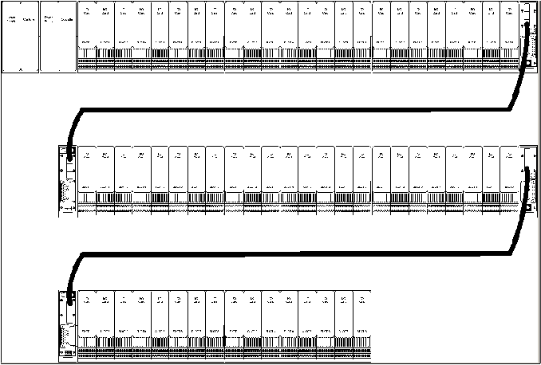
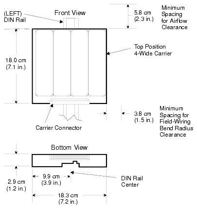
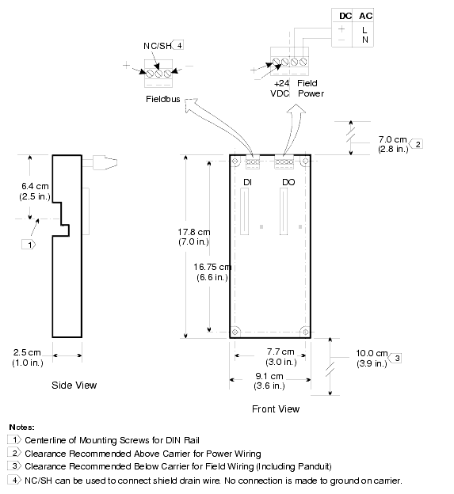
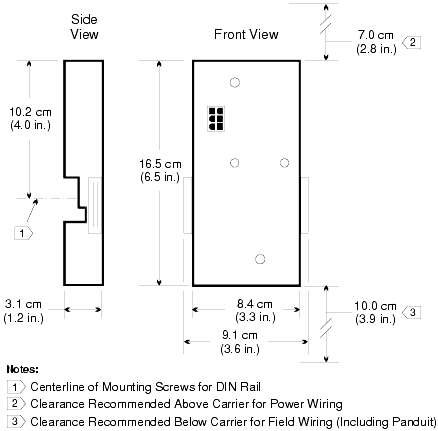
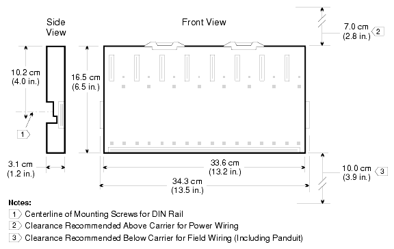
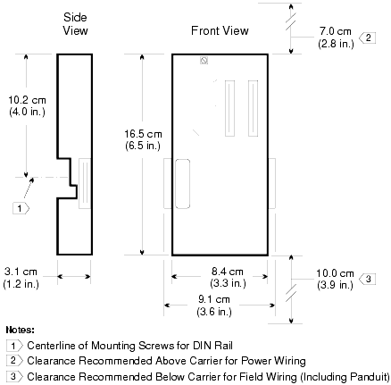
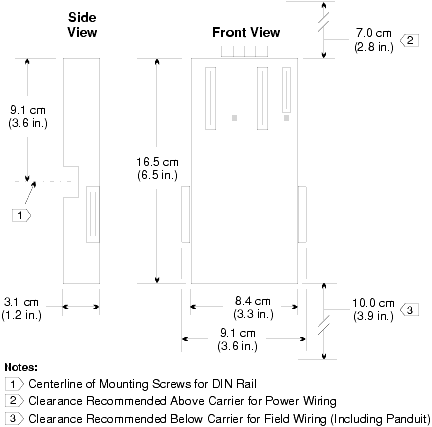
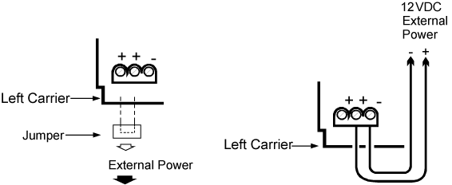
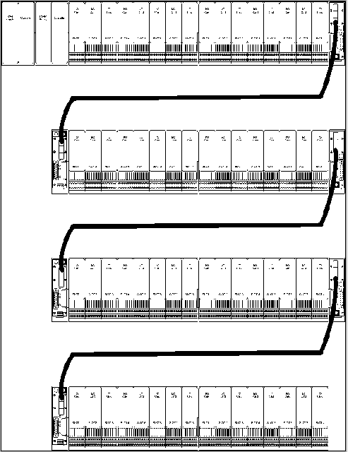
Q1: What is the maximum operating temperature for Series 2 I/O cards (non-As-Interface)?
Q2: What is the maximum total LocalBus cable length allowed across all carrier extender cables?
Q3: Which carrier type supports DeltaV Safety Instrumented System (SIS)?
Q4: What is the LocalBus power capacity of an 8-Wide VerticalPLUS I/O Interface carrier compared to an 8-Wide Horizontal I/O Interface carrier?
Q5: Under what ISA airborne contaminant class are most DeltaV I/O carriers rated?
A1: −40°C to 70°C (−40°F to 158°F)
A2: 6.5 meters (21.3 feet)
A3: VerticalPLUS carriers (Legacy Vertical carriers do not support SIS.)
A4: VerticalPLUS: 15 A; Horizontal: 8 A — VerticalPLUS provides nearly double the power.
A5: ISA-S71.04-1985 Class G3 (Harsh)
Pages 95–124, Appendices A–B of D800001X312